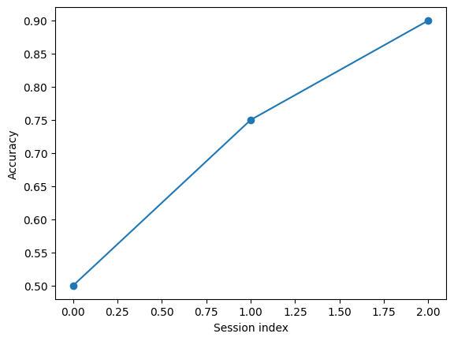

Imports¶
Use code from a module, recognise the names created by an import, and reuse your own functions. We have already imported Matplotlib in Week 2.
Import a module¶
import os makes the module available as os. A dot selects a function inside it. getcwd() returns the notebook kernel’s current working folder.
import os
print(os.getcwd())
/private/var/folders/bc/5m_c7nkj1vnc2w7xmmnhpfww0000gn/T/neu715-week3-publish-4y2lgvol/checkout/lectures 3
Import one function¶
from os import getcwd makes the function available directly as getcwd.
from os import getcwd
print(getcwd())
/private/var/folders/bc/5m_c7nkj1vnc2w7xmmnhpfww0000gn/T/neu715-week3-publish-4y2lgvol/checkout/lectures 3
Predict: in a fresh kernel, would getcwd() work after only import os? Which name did that import create?
Choose a shorter name with an alias¶
as gives an imported module a name in our notebook. plt is the conventional alias for Matplotlib’s plotting module; it is not a built-in name.
import matplotlib.pyplot as plt
plt.plot([0, 1, 2], [0.5, 0.75, 0.9], "o-")
plt.xlabel("Session index")
plt.ylabel("Accuracy")
plt.show()

Predict: after import matplotlib.pyplot as graph in a fresh kernel, which works: graph.plot(...) or plt.plot(...)? Explain why restarting matters when checking this.
Import your own code¶
The cell below contains an import and a function that calculates accuracy from outcomes coded 1 = correct and 0 = incorrect. The standard-library function statistics.mean returns the arithmetic mean.
Run the definition cell. It defines the function without calling it.
import statistics
def session_accuracy(outcomes):
"""Return the fraction of correct outcomes."""
return statistics.mean(outcomes)
Create a file named session_tools.py beside this notebook. Copy the entire cell, including its import, into the file and save it.
Restart the notebook kernel. Write your own code to import the saved module and test its function on the practice excerpts [1, 0, 1, 1] and [0, 0, 1, 1]. Calculate the expected results by hand, then compare them with the function outputs.
Explain why the module file needs its own import, even if the notebook previously imported the same library. Do not paste the function definition back into the notebook to make the tests work.
# Write your own import and tests for the function saved in session_tools.py.
Edits and notebook memory¶
After editing an imported .py file, restart the kernel and run the imports again to use the changed code. Repeating an import normally reuses the module already in memory. A missing import may be hidden by a name left over from an earlier cell.
Avoid from module import *: explicit names make it easier to see where a function came from.